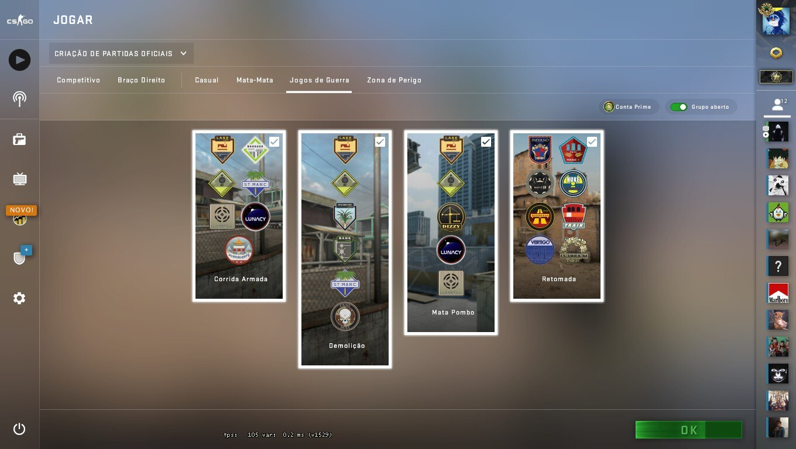

Modos de Jogo

Basicamente conta com 4 modos básicos de jogo. Abaixo você confere quais são
eles e como funcionam.
- Casual
- Demolição
- Competitivo
- Corrida às Armas
Casual
Funciona de forma bem parecida com o Clássico Competitivo. Mas, como o nome
indica, é mais casual. Por
exemplo, não registra tiros recebidos de aliados e nem danos de colisão. As partidas acontecem no
esquema de 30 rodadas. Não há um sistema de ranking global e serve mais para praticar.
Competitivo
É o modo mais tradicional na franquia. Aqui são jogadas 30 rodadas sendo que,
a cada 15, há uma
inversão no posicionamento de saída dos dois times no mapa. A dinâmica das partidas é a conhecida guerra
entre Terroristas e Contra-Terroristas. Tudo dura cerca de 45 minutos de jogatina.
Demolição
Partidas mais rápidas baseadas em ataque e defesa. Os times se revezam entre
planar e defender uma
bomba, enquanto o outro tenta aniquilar o adversário e desativar o dispositivo. Acontece com uma
variedade de armas e numa sequência de mapas estratégicos para esse modo.
Corrida às Armas
São tiroteios desenfreados em que os jogadores tentam acumular o máximo de inimigos derrotados
possível. A cada morte contabilizada, uma nova arma é disponibilizada imediatamente para o jogador. É
desse jeito que se consegue melhorias para armas e equipamentos, tornando um jogador mais poderosa.
Além destes, outros 5 modos de jogo foram adicionados a CS Go em atualizações. São eles:
Deathmatch. É o tradicional mata a mata desenfreado. O objetivo é eliminar o máximo de jogadores
adversários até o tempo terminar ou o placar de pontuações for atingido. Pode ser individual ou por
equipes.
Wingman. Mapas mais compactos e mais rápidos, para encontros mais oportunos. São 15 rounds de 1:30 min,
em que times de apenas dois jogadores se revezam para ativar e desativar uma bomba.
Flying Scoutsman. Mapas maiores focados na classe sniper (atiradores de elite). As regras, como duração,
mapas e arma (a única a ser usada é a SSG 08), são definidas antes das partidas. São válidos pontos por
mortes ou ativação/desativação de bombas.
Weapons Course. É um modo offline de treinamento completo para novos jogadores. O jogador não se conecta
a nenhum outro jogador enquanto pratica a pontaria. Tem lições sobre como usar armas, granadas, plantar
e desabilitar bombas. E permite usar bots, robôs que simulam outros competidores.
Danger Zone. É o battle-royale de CS GO. Até 18 jogadores num mapa gigantesco competindo pelos melhores
placares. Todos começam com uma faca e um mapa, e precisam procurar por armas, munição, equipamentos e
dinheiro para progredir. Possui desafios e missões internas, como resgatar reféns e desativar
bombas.